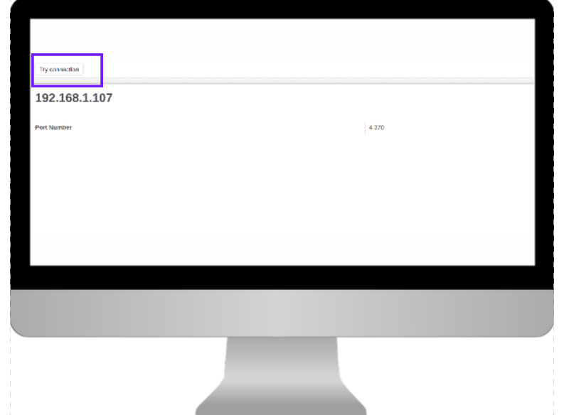
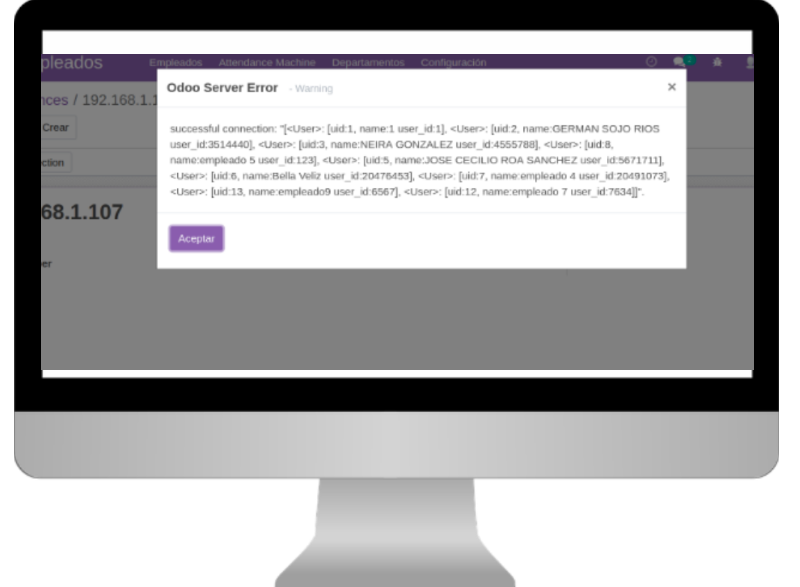

Description:
Module for the connection between odoo and zkteco devices for the control of employee assistance. This module is a demo version to test the compatibility of your device with our module.
How to use?
1- Assigning the role to the person in charge of administering the Zkteco device.

2- Create the zkteco machine registry that indicates the ip assigned to the device, and the port (4370).

3- Press the "try connection" button to test the connection, if the connection is successful, a pop-up window should appear with the message "successful connection" accompanied by the information of the users registered on your device.

